CadEditor - редактор уровней для множества игр под разные платформы (NES, Sega Mega Drive, GBA).
Полный список поддерживаемых игр здесь (обновляется).
Многие игры из списка (пока что) поддерживаются лишь частично – доступно редактирование определённых уровней или же возможно редактирование только определенного аспекта игры (фоны, блоки, списки врагов). Это не полноценная справка, а только краткое описание модулей программы.
Редактор состоит из нескольких стандартных модулей (редакторы элементов которые встречаются во всех играх - игровые экраны, блоки разных уровней, списки объектов), а также плагинов, которые подключаются для конкретных игр (например плагин-редактор игровой карты для игр Capcom или плагин-редактор формы уровня). Плагины оформлены в виде отдельных .Net-сборок, которые подгружаются основным редактором во время начала работы над редактированием игры.
Настройки для открытия конкретной игры хранятся в виде текстового файла на языке C# (конфига игры). В нём указаны адреса, по которым редактор считывает и записывает данные об уровне из ROM-файла или дампа памяти, а также способы загрузки игровых данных (они могут быть описаны на языке C# или вызывать готовые функции из библиотеки самого редактора).
В настоящий момент в комплекте с редактором идут более 400 конфигов, позволяющих редактировать около 500 разных уровней в более чем 80 играх для платформ NES и SMD.
Основные модули редактора
Screen Editor (Редактор экранов).
 Главное окно программы. Из него можно открывать остальные редакторы, а также изменять игровые экраны. Для некоторых игр один игровой экран соотвествует целому уровню, для других уровень строится из нескольких экранов одинаковой (реже разной) формы. Игровые экраны состоят из блоков, которые включают в себе один или несколько тайлов видеопамяти (а также информацию и палитре и физике, которая специфична для конкретной игры и платформы). Чаще всего встречаются блоки размеров 2x2 или 4x4 тайла, но бывают и другие варианты.
Главное окно программы. Из него можно открывать остальные редакторы, а также изменять игровые экраны. Для некоторых игр один игровой экран соотвествует целому уровню, для других уровень строится из нескольких экранов одинаковой (реже разной) формы. Игровые экраны состоят из блоков, которые включают в себе один или несколько тайлов видеопамяти (а также информацию и палитре и физике, которая специфична для конкретной игры и платформы). Чаще всего встречаются блоки размеров 2x2 или 4x4 тайла, но бывают и другие варианты.
Редактор позволяет использовать блоки, которые построены по информации взятой из ROM (необходимо задать соотвествующие функции для чтения и записи блоков в конфиге), либо же взять их заранее подготовленного изображения (в этом случае в конфиге необходимо указать имя файла с изображением и размер одного блока на нём. Редактор трактует изображение как ленту с набором последовательно нарисованных на ней слева-направо блоков).
Дополнительная возможность редактора экранов состоит в возможности объединения блоков в структуры (кнопка Make structures или просто выделить рамкой группу блоков на экране с зажатой кнопкой shift) - в этом случае создаётся виртуальная "кисть" из группы блоков. Она не будет сохранена в ROM, а просто позволит поставить на экране целую группу объектов (это удобно для игр с маленькими блоками и большими картами - например, можно выделить из сохранить как кисть большую группу блоков, которые составляют цельный объект, например, бочку или дерево):
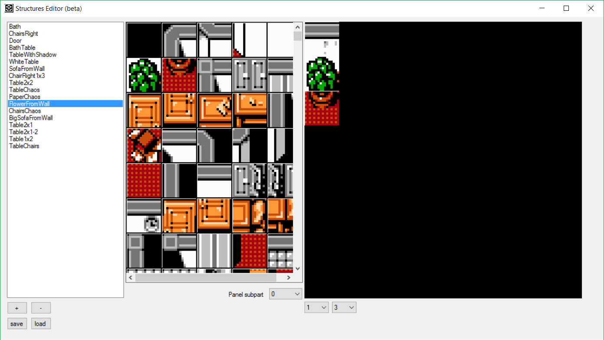Block editor (Редактор блоков).
В случае, если в конфиге заданы правила чтения и записи блоков из ROM, для него можно включить редактор блоков. Тогда из программы можно будет перестроить не только экраны, но и сами блоки - в редактор блоков можно изменить тайлы видеопамяти, из которых состоит блок, цвета палитры, в которые будет окрашены эти тайла, а также для некоторых игр - физический тип блока (фон, стена, шипы, скрытый проход и т.п.).
Версия для NES-игр (поддерживает блоки любого размера):
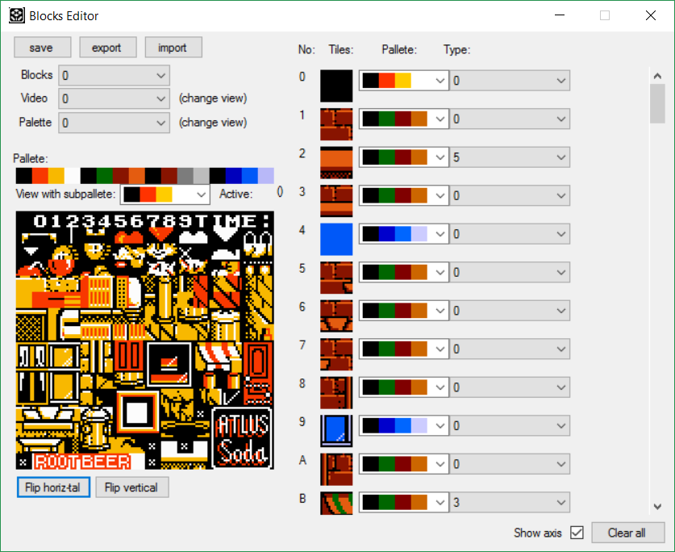Версия для Sega-игр (поддерживает блоки размером 2x2 и 4x4 тайлов):
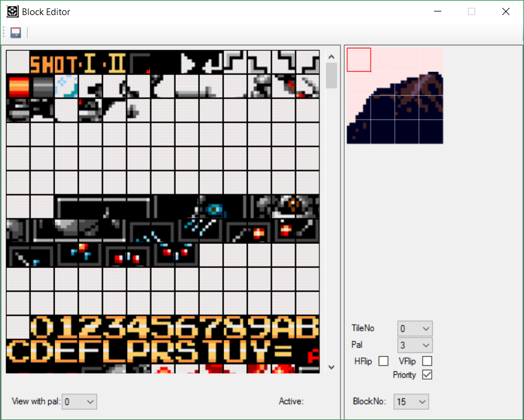Big Block Editor (Редактор макроблоков).
Иногда экраны в игре строятся не из блоков, а из макроблоков - структур, которые сами состоят не из тайлов видеопамяти, а из блоков меньшего размера. В этом случае в конфиге можно указать способ построение макроблоков из блоков и включить редактор макроблоков - в нём можно поменять блоки, из которых состоит каждый конкретный макроблок.
В некоторых играх (Rokin' Cats, например), макроблоки могут сами объединяться в ещё большие макроблоки 2 уровня, и так далее. Это также может быть описано в конфиге игры и включено в редакторе макроблоков.
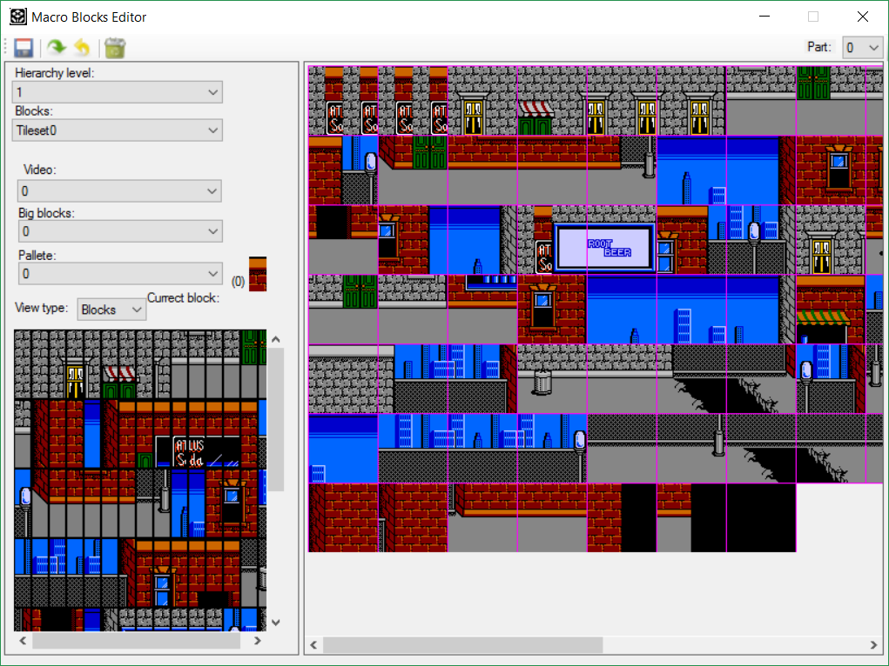В некоторых играх (Tiny Toon, Ninja Cats) информация о палитре и физических свойствах тайлов может кодироваться не на уровне блоков, а на уровне макроблоков, редактор поддерживает описание и таких макроблоков с дополнительной информацией.

(На скриншоте видны макроблоки с изображениями облаков, которые состоят из одних и тех же блоков, но используют разные цвета в палитре).
Enemy editor (Редактор объектов).
В редакторе объектов можно изменить список игровых объектов (враги, призы, двери - в зависимости от игры). Для некоторых игр разные объекты хранятся в разных списках, в конфигах можно задать несколько функций для чтения-записи этих списков, в этом случае в редакторе объектов будет доступно редактирование сразу нескольких списков. В самом общем случае объект представлен его номером и координатами на экране, различные игры могут добавлять к этому самую разную дополнительную информацию (здоровье каждого конкретного врага, выпадающий из него приз и т.п.).

Для многих игровых движков также важен порядок хранения объектов в списке (например, в Chip & Dale Rescue Rangers объекты должны храниться в последовательности, в которой они будут появляться на экране, пока не появится предыдущий объект, следующий не будет прочитан), поэтому в редакторе также отображается последовательность хранения объектов в виде списка объектов в правой части окна.
Подключаемые модули редактора для конкретных игр, жанров или платформ
Сюда входят модули, которые можно подключать в конфигах для определённых игр в дополнение к основным редакторам, а также библиотеки для построяния графики для определённых платформ.
PluginVideoNes.
Библиотека для построения графики в играх для платформы NES. Использует внутренние структуры CadEditor, но всесте с ним может быть использована и в других проектах.
PluginVideoSega.
Библиотека для построения графики в играх для Sega Mega Drive
PluginChrView.
Простой тайловый редактор для CHR-банков графики для игр NES.
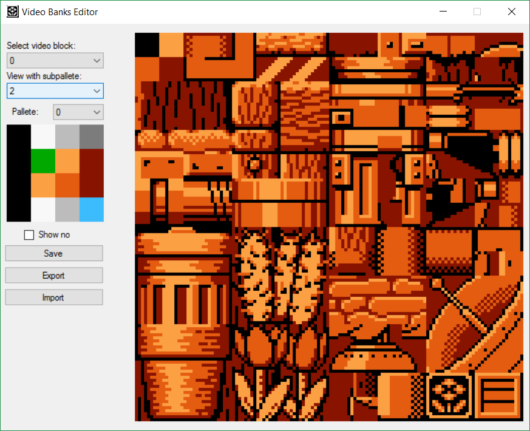PluginEditLayout.
Редактор раскладок (формы уровня) для некоторых игр Capcom. Позволяет записывать номера экранок в раскладку уровня, а также менять направления скроллов на этих экранах.
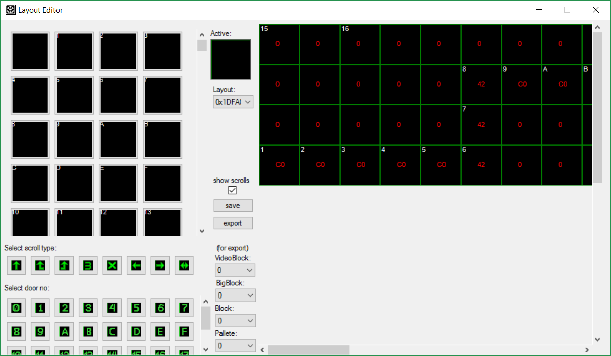PluginHexEditor.
Примитивный шестнадцатеричный редактор, который позволяет изменить любой байт в ROM-файле, однако его возможности сильно ограничены, лучше использовать сторонний более мощный hex-редактор.
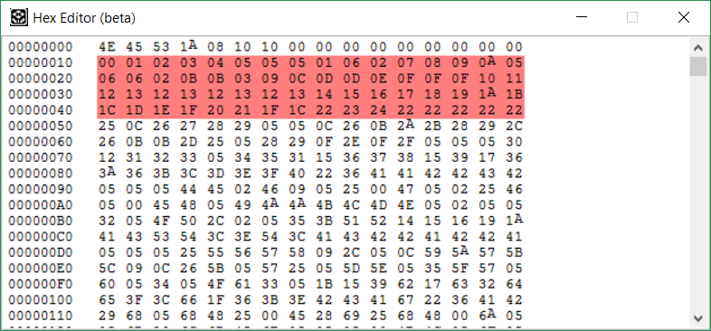PluginExportScreens.
Модуль для экспорта данных об индексах блоков на экранах. В виде картинки (для построения карты всего уровня) или бинарных данных (для использования в других проектах).
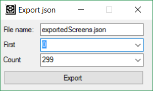Также позволяет экспортировать блоки и карту в формат TMX, который используется в редакторе Tiled.
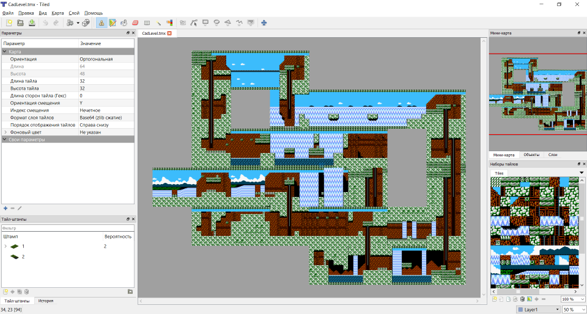PluginLevelParamsCad.
Редактор параметров уровня для Chip & Dale (номера используемых банков памяти, палитры, мелодии и т.п.)
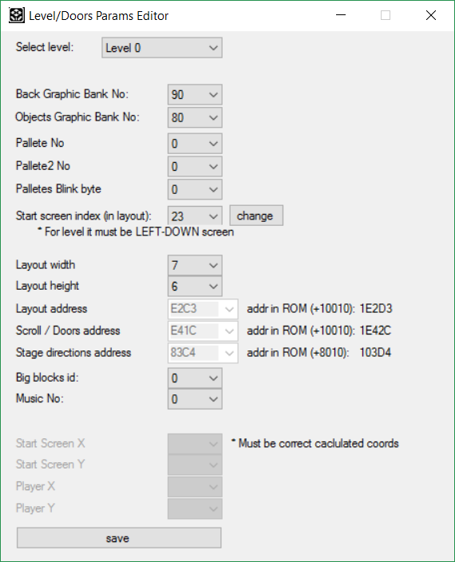PluginMapEditor.
Редактор глобальной карты (и некоторых других игровых экранов) для игр Capcom. Поддерживает 2 типа сжатия (rle и описательное), сохраняет карту в виде отдельного сжатого файла map.bin.
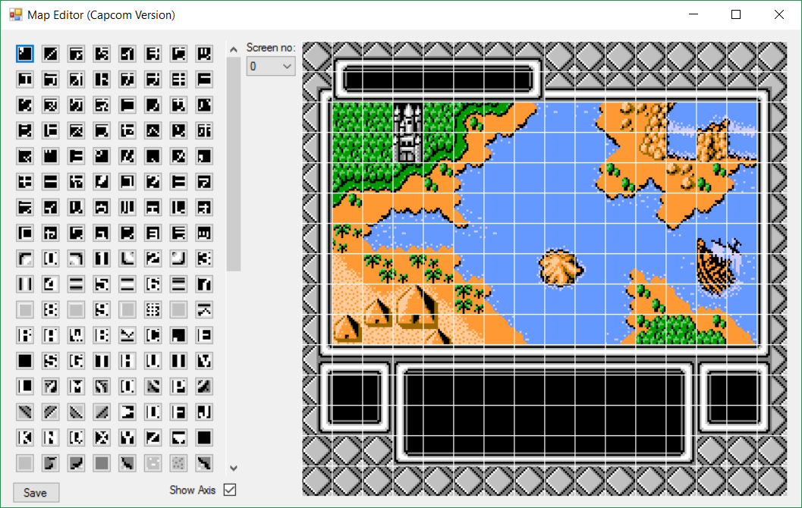PluginAnimEditor.
Редактор всех игровых анимаций для игр Capcom.
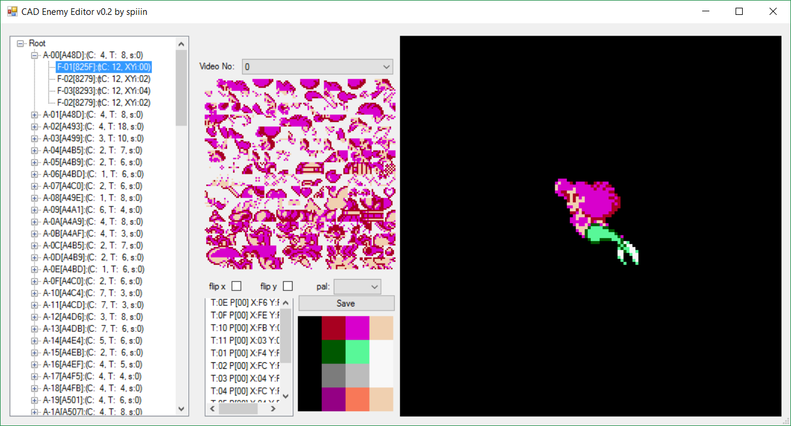PluginSegaBackEditor.
Редактор экранов, описанных маппингами для SMD-игр.
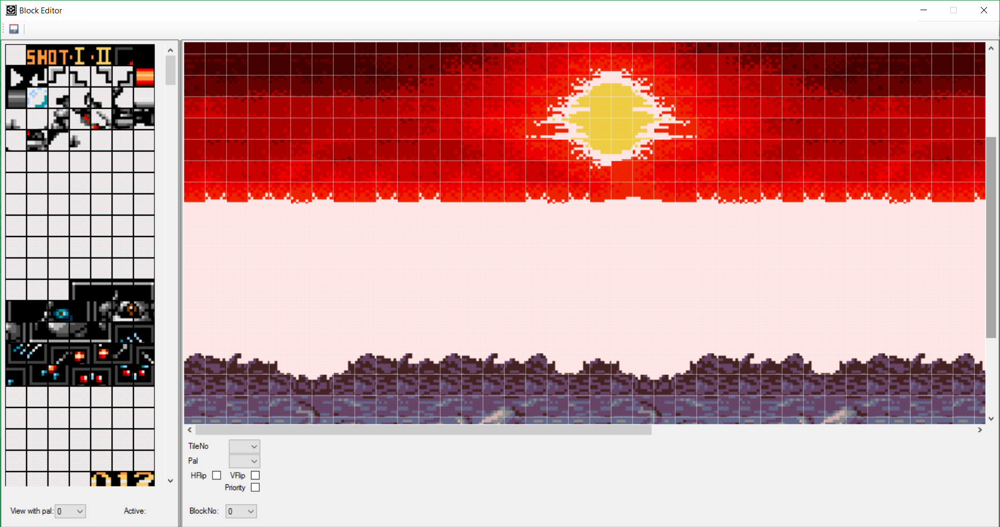PluginCompressLZKN.
Менеджер архивов LZKN. Позволяет сжимать дампы LKZN-1 (используется в играх Konami, например, [SMD] Contra Hard Corps). Использует библиотеку для сжатия от r57Shell.
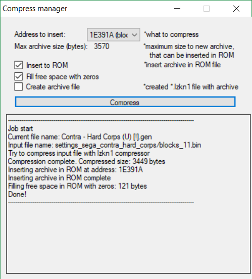